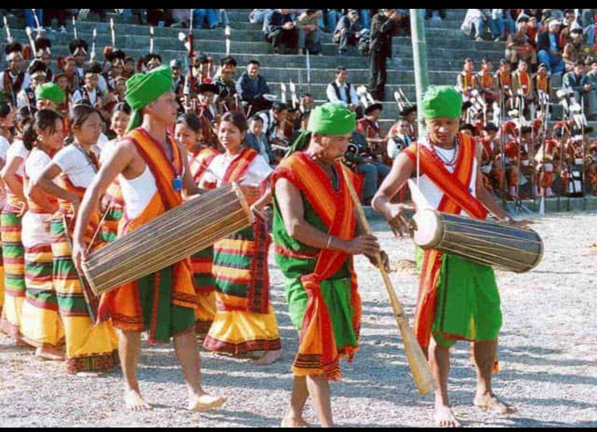
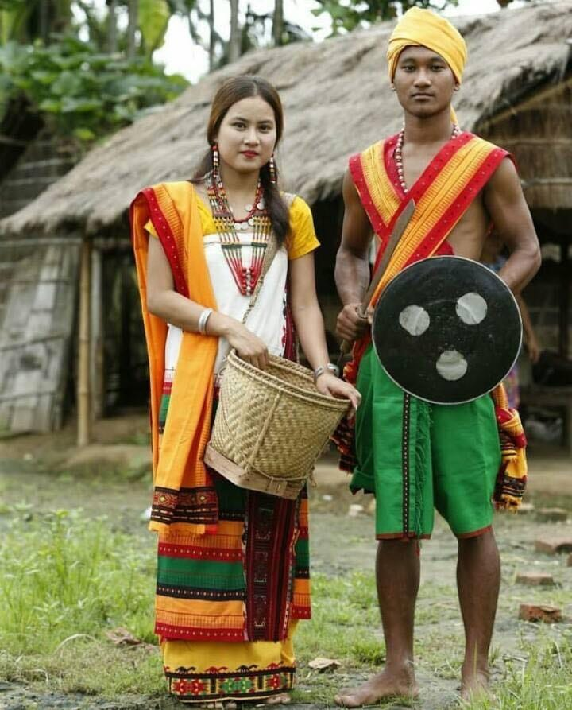
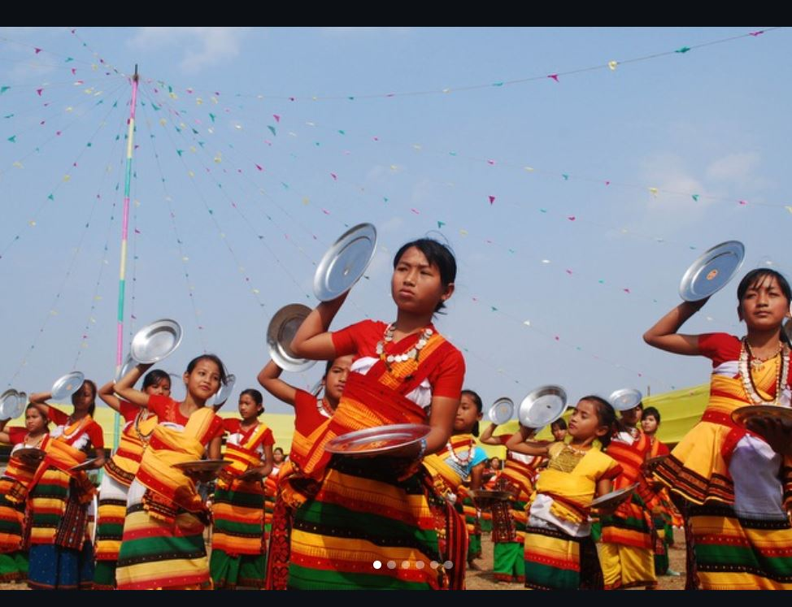

|
 |
 |
 |
Dima Hasao is one of the culturally rich and diverse districts of Assam, located in the northeastern part of India. The district is known not only for its beautiful hills, green forests, valleys and natural landscapes but also for its diverse indigenous communities, traditional lifestyles, colourful festivals, folk dances, music, traditional clothing and handicrafts. The people of Dima Hasao have preserved their cultural identity and ancestral traditions over many generations. Their customs, beliefs, languages and social practices form an important part of the cultural heritage of Assam. The combination of different ethnic communities makes Dima Hasao a unique and attractive destination for cultural tourism.
Dima Hasao is home to several indigenous communities, including the Dimasa, Zeme Naga, Hmar, Kuki, Biate, Karbi and other communities. Each community has its own cultural identity, language, traditional customs, festivals, food habits, clothing and social practices. These communities contribute to the cultural diversity of the district and maintain their distinctive traditions while living together in the same geographical region. The Dimasa community has a particularly important place in the history and cultural identity of Dima Hasao. The name of the district is closely associated with the Dimasa people and their traditional homeland. Other communities also contribute significantly to the social, cultural and economic life of the district. Their traditional knowledge, folk songs, dances, weaving skills and community celebrations reflect the richness of indigenous culture in Northeast India.
Language is an important part of the cultural identity of the people of Dima Hasao. Different indigenous communities speak their own languages, which are used in everyday communication, traditional ceremonies, folk songs and the transmission of cultural knowledge from one generation to another.Dimasa is an important language of the district, while Zeme, Hmar, Biate, Kuki and other community languages are also spoken. Assamese and other languages may be used for communication between people from different linguistic backgrounds, depending on the locality and situation. The use of multiple languages reflects the district's cultural diversity.Traditional stories, legends, folk songs and oral histories play an important role in preserving the languages and collective memories of these communities. Protecting indigenous languages is essential because they carry knowledge about history, nature, customs and traditional ways of life.
Traditional clothing is an important expression of the cultural identity of the communities of Dima Hasao. Different communities have their own styles of dress, patterns, colours and methods of weaving. Traditional garments are often worn during festivals, weddings, religious ceremonies and other important social occasions. Among the Dimasa people, traditional garments include the Rigu, commonly worn by women, and the Risa, another t raditional garment associated with Dimasa women's clothing. Traditional textiles are valued for their designs, colours and cultural significance. Other communities in the district also have distinctive traditional garments that reflect their heritage. Traditional ornaments, decorative accessories and handwoven fabrics add beauty to cultural celebrations. These garments and ornaments are not merely items of clothing; they also represent community identity, artistic skills and the continuation of ancestral traditions.
Festivals are an essential part of the social and cultural life of Dima Hasao. They provide opportunities for people to celebrate their traditions, express gratitude, strengthen community relationships and pass cultural knowledge to younger generations. Festivals are often associated with agriculture, harvests, seasonal changes, religious beliefs and important events in community life.Bushu Dima is one of the most important traditional festivals of the Dimasa community. It is generally associated with harvest celebrations, joy, thanksgiving, music, dancing and community gatherings. During the festival, people wear traditional clothes, perform folk dances, sing traditional songs and participate in various cultural activities.Other indigenous communities celebrate their own festivals according to their customs and traditions. These celebrations may include traditional dances, music, community feasts and ceremonies. Such festivals help preserve cultural heritage and allow visitors to learn about the customs and lifestyles of the people of Dima Hasao.
Traditional dance and music are important elements of the cultural heritage of Dima Hasao. Folk dances are performed during festivals, harvest celebrations, weddings and other community occasions. They often represent happiness, unity, gratitude, respect for nature and the importance of collective life. Dimasa traditional dances are particularly associated with festivals such as Bushu Dima. Performers wear traditional attire and move in coordinated patterns accompanied by traditional musical instruments. The songs and dances reflect the history, beliefs, emotions and everyday experiences of the community. Different indigenous communities have their own musical traditions, instruments, dance movements and folk songs. Traditional music is often passed down orally from older generations to younger people. These performances help maintain a connection with the past and preserve the cultural identity of the district.
The rich cultural diversity of Dima Hasao makes the district an important destination for cultural tourism and provides visitors with an opportunity to experience the traditions of different indigenous communities.
| << Previous | Next >> |